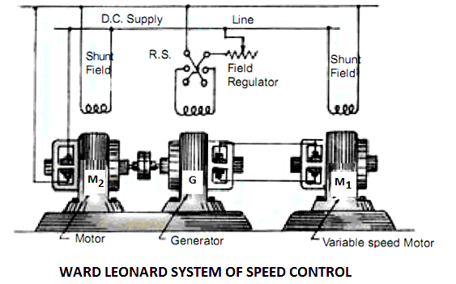

Ward Leonard control system is introduced by Henry Ward Leonard in 1891. Ward Leonard method of speed control is used for controlling the speed of a DC motor. It is a basic armature control method. This control system is consisting of a dc motor M_1 and powered by a DC generator G. In this method the speed of the dc motor (M_1) is controlled by applying variable voltage across its armature. This variable voltage is obtained using a motor-generator set which consists of a motor M_2(either ac or dc motor) directly coupled with the generator G. It is a very widely used method of speed control of DC motor.
Principle of Ward Leonard Method
Basic connection diagram of the Ward Leonard speed control system is shown in the figure below.

The speed of motor M1 is to be controlled which is powered by the generator G. The shunt field of the motor M1 is connected across the dc supply lines. Now, generator G is driven by the motor M2. The speed of the motor M2 is constant. When the output voltage of the generator is fed to the motor M1 then the motor starts to rotate. When the output voltage of the generator varies then the speed of the motor also varies. Now controlling the output voltage of the generator the speed of motor can also be controlled. For this purpose of controlling the output voltage, a field regulator is connected across the generator with the dc supply lines to control the field excitation. The direction of rotation of the motor M1 can be reversed by excitation electric current of the generator and it can be done with the help of the reversing switch R.S. But the motor-generator set must run in the same direction.
Advantages of Ward Leonard System
- It is a very smooth speed control system over a very wide range (from zero to normal speed of the motor).
- The speed can be controlled in both the direction of rotation of the motor easily.
- The motor can run with a uniform acceleration.
- Speed regulation of DC motor in this ward Leonard system is very good.
Disadvantages of Ward Leonard System
- The system is very costly because two extra machines (motor-generator set) are required.
- Overall efficiency of the system is not sufficient especially it is lightly loaded.
Application of Ward Leonard System
This Ward Leonard method of speed control system is used where a very wide and very sensitive speed control is of a DC motor in both the direction of rotation is required. This speed control system is mainly used in colliery winders, cranes, electric excavators, mine hoists, elevators, steel rolling mills and paper machines etc.
 by
by